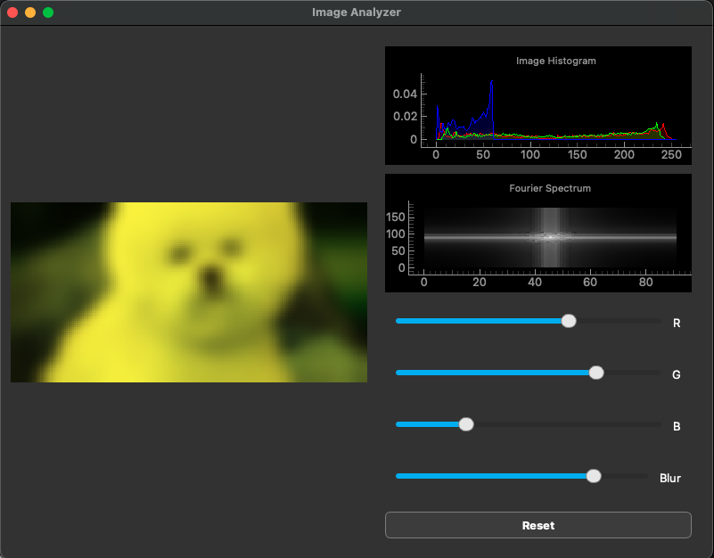

A Real-Time Image Analyzer in PyQt
Motivation
I wanted a small, self-contained desktop tool to interactively explore what happens to an image when you tweak its color channels or blur it — and to see those changes reflected immediately in the image's statistics. Rather than re-running a script every time, the goal was a live GUI: drag in an image, move a slider, and watch both the picture and its analytics update in real time.
The result is a PyQt6 + PyQtGraph application that pairs a drag-and-drop image canvas with two live plots — an RGB histogram and a 2D Fourier spectrum — driven by a handful of NumPy image operations.

Methodology
The app is split cleanly into two pieces: a set of pure NumPy image functions
(image_fncs.py) and the PyQt GUI that wires them to widgets (pyqt_gui.py).
Images are loaded as float32 RGBA arrays so that repeated transformations don't
accumulate integer-rounding error, and only clipped back to uint8 at display
time.
The image operations
Channel intensity. Each RGB slider scales one color channel by a factor $\alpha = v/100$, where $v$ is the slider value. For channel $c$,
$$ I'{c}(x,y) = \alpha , I{c}(x,y), $$
leaving the other channels untouched. This is the cheapest of the operations — a single broadcast multiply.
def color_intensity(image, channel, intensity):
adjusted_image = image[:, :, :3].copy()
adjusted_image[:, :, channel] = adjusted_image[:, :, channel] * intensity
return adjusted_image
Box blur. The blur is an unnormalized-kernel box filter of radius $r$. Each output pixel is the mean of its neighbors within a $(r{+}1)\times(r{+}1)$ window,
$$ I'(x,y) = \frac{1}{|\mathcal{N}|} \sum_{(i,j)\in \mathcal{N}(x,y)} I(i,j), $$
where $\mathcal{N}(x,y)$ is the set of in-bounds neighbors. It's implemented with explicit loops, which is transparent but $O(W H r^2)$ — the most expensive control in the app, and a natural candidate for a separable-kernel or FFT-based speedup.
The live analytics
RGB histogram. For each channel the app computes a normalized 256-bin histogram (a density estimate of the pixel-intensity distribution) and draws all three as filled curves:
def image_histogram(image):
hist, bins = np.empty((3, 256)), None
for color in range(3):
hist[color], bins = np.histogram(
image[:, :, color].flatten(), bins=256, range=(0, 256), density=True)
return hist, bins
Fourier spectrum. The image is converted to grayscale by averaging the channels, then run through a 2D FFT. The zero-frequency component is shifted to the center and the magnitude is log-scaled for display:
$$ F(u,v) = \mathcal{F}{,g(x,y),}, \qquad S(u,v) = \log!\big(1 + |,\text{fftshift}(F),|\big), $$
with $g = (R + G + B)/3$. The $\log(1+\lvert\cdot\rvert)$ compression is what makes the spectrum legible — raw FFT magnitudes span many orders of magnitude and would otherwise show only the DC spike.
def grayscale_fft(image):
gray = (image[:, :, 0] + image[:, :, 1] + image[:, :, 2]) / 3.0
fft = np.fft.fft2(gray)
fft_shifted = np.fft.fftshift(fft)
return np.log1p(np.abs(fft_shifted)).astype(np.float32)
The GUI
The interface is a QMainWindow with the image canvas on the left and a vertical
stack on the right holding the two PyQtGraph plots, four sliders (R, G, B, and
Blur), and a reset button. Images arrive via drag-and-drop: dropEvent reads the
file into a QImage, exposes the raw buffer as a NumPy array, and keeps both an
untouched original and a working copy. Every slider movement re-derives the
working copy from the original, re-renders the canvas, and refreshes both plots,
so the histogram and spectrum always track exactly what's on screen.
Results
The finished app loads any dropped image and responds to channel and blur adjustments in real time, with the histogram and Fourier spectrum updating live alongside the picture. It's a compact demonstration of coupling NumPy image processing to a responsive PyQt/PyQtGraph front end — and a clean base to extend with more filters (the box blur, in particular, is the obvious first target for an FFT-based reimplementation).
Dependencies are minimal: PyQt6, PyQtGraph, and NumPy, with Jupyter and Matplotlib used only for the unit tests.